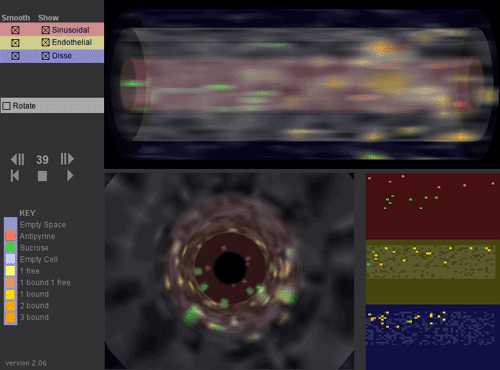

|
|
Sinusoidal Segment Interactive 3D Visualization Executable file is available upon request DescriptionThis movie is an interactive 3D visualization of antipyrine & sucrose compounds percolating through one (#7 out of about 60) Sinusoidal Segment in the In Silico Liver (over 400 time steps). The three grid spaces (pink: sinusoidal, yellow: endothelial, and blue: space of the space of Disse plus hepatocytes) are rendered as concentric cylinders. Two views are provided of these cylinders. One is a side view (upper right) and the other is a head-on view (lower left). At the lower right the raw grid data is directly represented. For each grid space point there are several options:
Each “smooth” control on the upper left is used to distinguish the spaces; it causes the grid data to be blurred or not. The blurring is being applied as a texture to a cylinder and could be viewed as representing the likelihood that a compound of that type is actually in that location. The “Show” control selects the space (Sinusoidal, Endothelial and Space of Disse & Hepatocytes (SoD) to be observed (or not). Selecting “Rotate” causes the cylinder to rotate. The “>||” and “||<” controls causes in silico time to move one step forward or backward. Notes:
To view the movie you need Macromedia Shockwave Player 10 running on a late-model computer (Mac or Win) with openGL and hardware 3D acceleration. For additional biological and pharmacokinetic detail see: Hung DY, Chang P, Weiss M, Roberts MS.(2001) Structure-hepatic disposition relationships for cationic drugs in isolated perfused rat livers: transmembrane exchange and cytoplasmic binding process. J Pharmacol Exp Ther. 297:780-9. |
ADS 2010: The premise of the agent paradigm, its related theory and methodologies together with advances in multilevel modeling of complex systems of interactions opened new frontiers for advancing the physical, natural, social, military, and information sciences and engineering... |